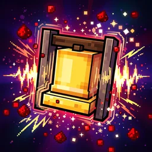

KnechtCraft
In 5 Minuten auf dem Server. Minecraft 26.3 mit Fabric.
Modpack
KnechtCraft Season 6
.mrpack · 271 KB
Herunterladen
Server-Adresse
minecraft.fun-labs.cloud:42069
So geht's
- Modrinth App installieren
Von modrinth.com/app laden, installieren und mit deinem Microsoft-Konto anmelden.
- Modpack importieren
Oben das Modpack herunterladen. In der App links auf +, dann Aus Datei / From file und die Datei wählen. Die Mods werden automatisch geladen.
- Starten
Die neue Instanz öffnen und auf Play klicken. Nicht den normalen Minecraft Launcher nehmen.
- Server hinzufügen
Mehrspieler → Server hinzufügen. Name KnechtCraft, dazu die Server-Adresse von oben. Fertig und beitreten.
Simple Voice Chat
Sprachchat im Spiel
- Du hörst Spieler in deiner Nähe, bis etwa 48 Blöcke.
- V öffnet das Menü. Dort Mikrofon wählen und testen.
- Sprechen mit Caps Lock (Push-to-Talk) oder per Sprachaktivierung.
- In einer Gruppe hört ihr euch überall.
Distant Horizons
Weite Sicht
- Zeigt Landschaft weit hinter der normalen Sichtweite.
- Die Ferne baut sich beim ersten Besuch langsam auf. Das ist normal.
- Ruckelt es? In den Videoeinstellungen die DH-Reichweite senken.